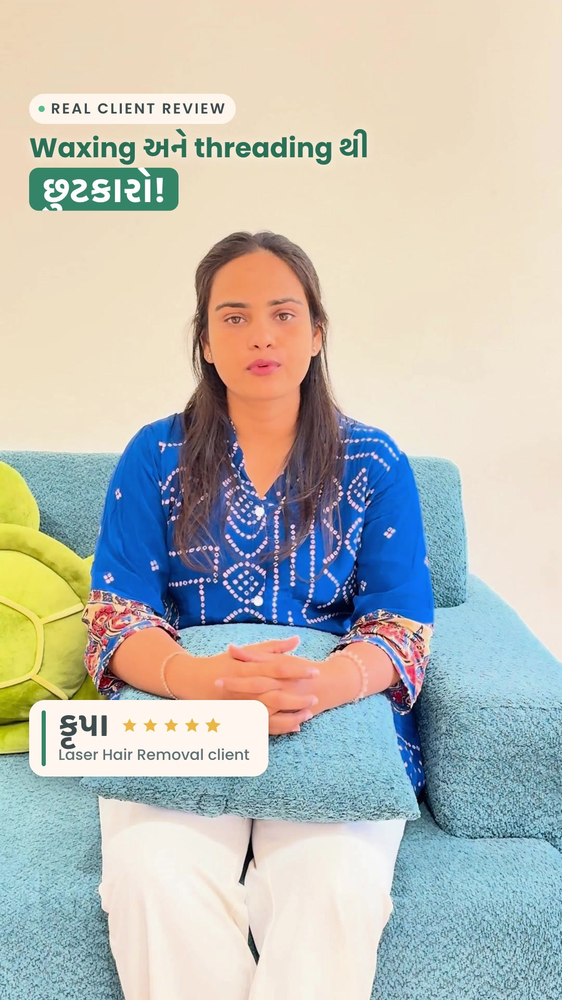
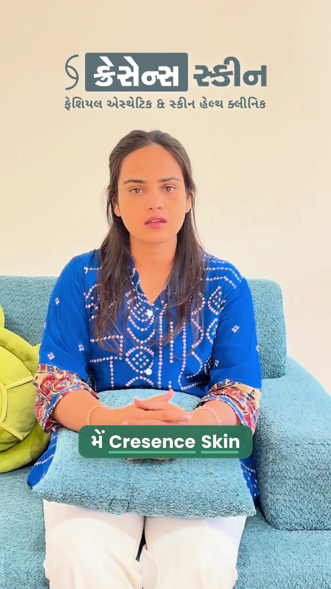
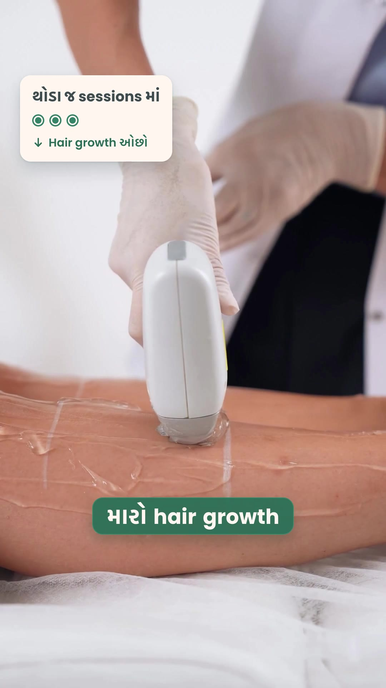
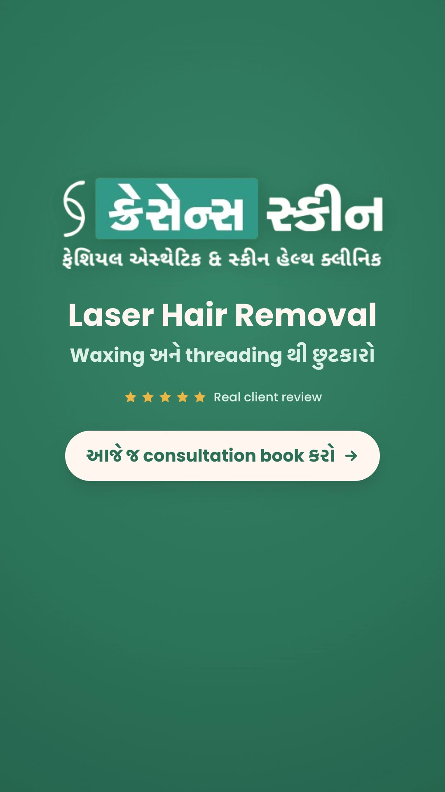

Tap play for sound. 9:16 Reel, 39.5 s. Web copy at 720p; the original is 1080p.
What I tried
HyperFrames makes a video from an HTML page with a timeline. I gave it one raw phone review from a Cresence Skin client and built a branded Reel around it.
- Captions in Gujarati script with English treatment words, word-by-word highlight, kept inside the Reels safe area.
- When she names a treatment, a matching clip cuts in while her voice and captions continue.
- Clinic logo moment, quote card, end card with call to action, soft piano bed under a cleaned-up voice.
- Fixed along the way: an HDR iPhone clip that greyed out every card, and a layer that only showed up in the final render.
Stills




